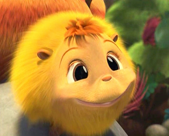

我一直对美国的动画电影情有独钟，今天看了《霍顿与无名氏》这部动画片，觉得实在不错，据说制片的是Ice Age的原班人马。画面不错，胖胖的大象很可爱，还有那个名叫ketty的猴脸生物，就是下面那个。实在讨人喜欢啊。
{kind=link}

我小时候也曾经幻想过片中的这种情景，整个宇宙是一层套着一层的，而我们自己就好像是外层世界的“人”的宠物一样，他们通过显微镜来观看我们的一举一动，就如同我们观察分子运动差不多。至于最外面是啥那时的我就搞不清楚了，于是就巨扯地告诉自己这一切就是这样循环下去的，一层又一层，晕。
PS： 配音阵容极其强大Jim Carrey Selena Gomez Seth Rogen… 都是牛人啊。而且人物个性很鲜明，除了大象Horton外，我还特别喜欢那个秃鹫先生，虽然是个反面角色，但在片中其表现挺滑稽，配音的好像还带点俄语的 颤舌头，很有味道。 五星推荐，hoho.
呃，转一点来自VeryCD介绍：
◎译 名 霍顿与无名氏
◎片 名 Horton Hears a Who
◎年 代 2008
◎国 家 美国
◎类 别 家庭/冒险/动画
◎语 言 英语
◎字 幕 N/A
◎IMDB评分 7.6/10 (7,152 votes)
◎IMDB链接 http://www.imdb.com/title/tt0451079/
◎文件格式 XviD + MP3
◎视频尺寸 624×336
◎文件大小 1CD 49 x 15MB
◎片 长 1:22:34
◎导 演 吉米·海沃德 Jimmy Hayward
斯蒂夫·马蒂诺 Steve Martino
◎主 演 金·凯瑞 Jim Carrey …..Horton (voice)
史蒂夫·卡瑞尔 Steve Carell …..The Mayor of Who-ville (voice)
塞斯·罗根 Seth Rogen …..(voice)
乔纳·希尔 Jonah Hill …..(voice)
杰米·普莱斯利 Jaime Pressly …..(voice)
艾拉·菲舍尔 Isla Fisher …..(voice)
威尔·阿奈特 Will Arnett …..(voice)
乔什·佛雷特 Josh Flitter …..Rudy (voice)
艾米·波哈尔 Amy Poehler …..(voice)
丹·福勒 Dan Fogler …..Yummo (voice)
Carol Burnett …..Kangaroo (voice)
Laura Ortiz …..Jessica
赛琳娜·戈麦斯 Selena Gomez …..Mayor’s daughter (voice)
◎简 介
不论个头大小，生命就是生命。一只名叫霍顿、非常有想象力的大象，在一个极为偶然的情况下，听到了一粒在空气中漂浮的灰尘上传来了微弱的求救 声，他怀疑就和奥秘的宇宙是一个道理，这粒灰尘上也存在着生命体。不过那个时候的霍顿还没有意识到，灰尘上果然躲藏着一个名叫“无名镇”的城市，里面居住 的都是一些微小的“无名氏”们，他们听从着“市长”的领导……虽然居住在霍顿身边的邻居都在嘲笑他，把他当成了精神病，认为他已经失去了理智，霍顿还是决 定解救这些像斑点一样大小的生命。
不论个头大小，生命就是生命。一只名叫霍顿、非常有想象力的大象，在一个极为偶然的情况下，听到了一粒在空气中漂浮的灰尘上传来了微弱的求救声，他 怀疑就和奥秘的宇宙是一个道理，这粒灰尘上也存在着生命体。不过那个时候的霍顿还没有意识到，灰尘上果然躲藏着一个名叫“无名镇”的城市，里面居住的都是 一些微小的“无名氏”们，他们听从着“市长”的领导……虽然居住在霍顿身边的邻居都在嘲笑他，把他当成了精神病，认为他已经失去了理智，霍顿还是决定解救 这些像斑点一样大小的生命。
霍顿面对的首要问题，就是给“无名镇”中的居民们重新找到一个适合居住的地方。本着他一直信守的格言–大象的忠诚度永远是百分之百的，以及正直、真诚的决心，除非达到目的，否则霍顿是永远都不会放弃的。
一句话评论：
你一定会爱上这个皮糙肉厚、反应迟钝的霍顿，改编后的影片令这只大象的魅力非常稳固地延续着。
——《方城时报》
由电脑生成的霍顿，更具趣味性的同时，还忠实地维持住了苏斯博士作品中的灵魂。
——《俄勒冈州新闻》
影片中的一切都显得过于亢奋，各种尖叫声简直就是在制造噪音，而且原著中的故事，显然还达不到一部电影长片的含量。
——《果酱电影》
改编成电影后，整个故事的内容很空洞，而且过于自我膨胀，原著小说的吸引力生生地毁在了编剧肯•多里奥（Ken Daurio）和辛科•保罗（Cinco Paul）的手中。
——《堪萨斯城市之星》
精彩对白：
Horton: If you were way out in space, and you looked down at where we live, we would look like a speck.
霍顿：如果你找到了去太空的出口，然后向下看我们居住的地方，我们看起来和微小的斑点也没什么两样。
The Mayor of Who-ville: Hey, hon, did you ever get the feeling that you were being watched, and that maybe that thing watching you is… ehhh, a giant elephant?
Sally O’Malley: Um, you know, I’m going to have to say, “No”. Do you know that feeling?
The Mayor of Who-ville: [laughs nervously] No!
无名镇的市长：嗨，亲爱的，你有没有自己一直被注视着的感觉？而且那个一直注视着你的……呃，可能是一只大象？
萨莉•欧•麦丽：你知道，嗯，我不得不说，我没有这种感觉。难道你有？
无名镇的市长（紧张地大笑）：当然没有了！
Horton: Just me and the speck, shootin’ the breeze. We’re a club. We’re a group. We can be a secret society. And no one else can join, unless they wear funny hats.
霍顿：只有我和这粒灰尘，我们在闲谈。我们可以组成俱乐部，我们可以组成一个群体，甚至可以成为一个秘密的组织。其他人谁也没办法加入进来，即使他们带着有趣的帽子。
Horton: There are people on this speck. They have a mayor who has 96 daughters and one son named Jojo, who all share a bathroom! Whatever that is…
霍顿：这粒浮尘上住着人，他们还有一个生了96个女儿和一个叫乔-乔的儿子的市长，他们共享一间浴室！无论如何那都是……
Horton: Even though you can’t see them at all / A person’s a person, no matter how small.
霍顿：即使你看不到他们，但生命就是生命，和个头大小没有关系。
Horton: I meant what I said, and I said what I meant.
Morton: [sighs] An elephant’s an elephant one hundred percent.
Horton: That’s my code, my motto.
霍顿：我所说即是所想，所想即是所说。
莫顿（叹气）：百分之百是大象中的大象。
霍顿：那是我的法则，我的座右铭。